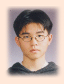

::: 신입생의 글 :::

MR 01학번 심근섭
"안녕하세요∼"
오늘도 여느 때처럼 새로 옮긴 MR 동아리방 문을 열고 들어간다. 나란히 놓여져 있는 컴퓨터들, 항상 누군가 누워
있는 소파, 그리고 사람들의 웃음 섞인 대화들.. 너무나도 친숙한 이 모든 풍경이 이젠 나의 일상의 대부분을 차지하고
있다.
KAIST에 입학한 지가 엊그제 같은데 어느새 반년 이상의 시간이 흐른 지금...
비록 짧은 시간이지만 돌이켜보면 학기 초, 나는 완전히 새로운 환경 속에서 대학생활을 시작한다는 것에 대한 기대감과
불안감으로 가득 차 있었다. 그리고 동아리를 결정함에 있어서 로봇 한번 만들어보고 싶은 생각에 무작정 미스터에
들었던 기억이 난다. 지금 생각해보면, 당시에는 별 깊은 생각 없이 내린 결정이었을지 모르나, 아마 수십 년 후에
회상했을 때 내 인생 최고로 잘 내린 결정 베스트 3에 충분히 끼고도 남을 것이라고 확신한다. 그 정도로 나는
미스터를 진정으로 사랑한다.
우선 대학에 들어와서 동아리를 통해 너무 좋은 사람들을 많이 사귈 수 있었던 점이 가장
기뻤던 것 같다. 같은 01학번 친구들은 물론, 고학번 선배님들과도 만날 수 있어서 넓은 인간 관계를 가질 수
있었기 때문이다. 종종 있는 술자리에서도 때로는 진지하게, 때로는 즐겁게 이야기를 나눌 수 있었으며 기쁨과 슬픔을
같이 나눠 줄 사람들이 주위에 이렇게 많다는 사실이 정말 행복했다.
그리고 앞으로 내가 걸어야 할 길에 대한 보다 구체적인 비젼을 마련할 수 있다. 지금까지는 막연히 '어느 과에
가고 싶다, 가면 무얼 하고 싶다' 라고 생각하던 것이 전부였는데, MR에서 실제로 선배님들께서 하시는 일의 얘기를
듣고, 직접 조언도 받을 수 있기 때문이다. 아직은 대부분 이해하지 못할 일들 투성이지만, 언젠가 나도 반드시
선배님들과 같은 대열에 끼고 싶다는 욕심을 가져본다.
전에 동아리 선배님께서 이런 말씀을 하신 적이 있다. 아직은 아니지만 분명 가까운
미래에 로봇의 위상이 현재 자동차의 위상만큼 높아질 것이며, 따라서 각 가정 당 최소 1대씩을 보유하고 그것을
다루기 위해 자격증도 필요한 그런 세상이 올 것이라고. 그리고 이러한 혁신적인 발전의 최고 우두머리에 바로 우리
KAIST의 MR인들이 자리잡고 있다는 말씀을 하셨을 때, 정말 정신차리고 똑바로 해야겠다는 생각이 들었다. 우리가
하는 일들 하나 하나가 모여서 결국 결실을 맺을 거라는 자신감 속에 보다 적극적으로 동아리 활동에 참여할 필요성을
느꼈다.
비록 아직 1학년이지만 지금까지 동아리에서 했던 일들을 돌이켜보면.. 봄 학기 때, 아무 것도 모르는 상황에서
Line Tracer를 만든다고 같이 작업하고, 생각보다 잘 안 돼서 속상했던 일.. 여름 방학 때, 개미로봇을
만들기 위해 거의 매일 새벽까지 조원들과 고생하다가 개미가 처음으로 움직였을 때 느꼈던 기쁨.. 술자리에서 선배님들,
그리고 친구들과 즐겁게 웃었던 일들.. 정말 좋은 기억들뿐인 것 같다. 그리고 나는 앞으로 더욱 즐거운 추억들을
만들기 위해 계속 노력할 것이다.
다시 한번 나는 계속 미스터 활동에 최선을 다 할 것이며, 몇 년이 지나도 내가 MR인이라는 사실을 절대 잊지
않을 것이라 다짐한다. 마지막으로 MR의 영원한 발전을 기원하는 뜻으로 한마디 외치고 싶다.
"미스터를, 위하여!!"